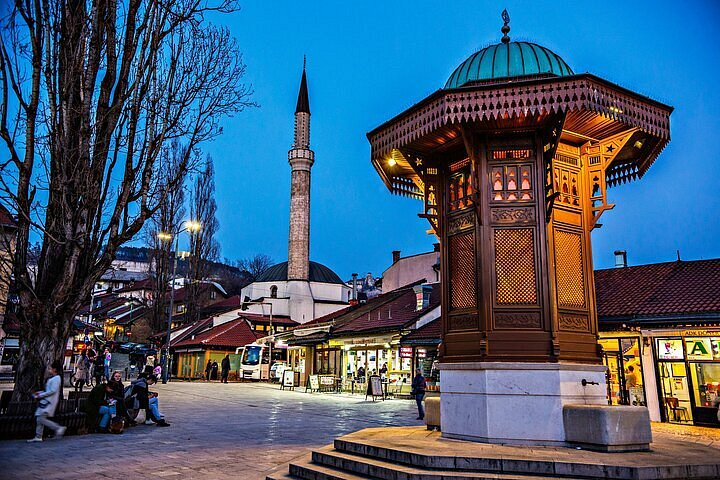

Dobrodošli u Sarajevo! Ture su namijenjene turistima i posjetiocima grada koji žele upoznati historiju i kulturu Sarajeva uz stručno vodstvo lokalnih vodiča.
Tokom dana organizirat ćemo nekoliko šetnji kroz grad. Svaka tura traje oko dva sata, a vodiči govore bosanski, engleski i njemački jezik.

Ture se održavaju svakim radnim danom (osim srijedom) od 10:00 do 18:00 sati. Okupljanje je ispred Sebilja na Baščaršiji.
Kako se prijaviti na turu:
Dostupne ture:
Više informacija o gradu možete naći na stranici Visit Sarajevo.